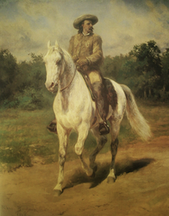

French painter and boundary-breaking feminist Rosa Bonheur was born as Marie-Rosalie Bonheur on March 16, 1822 in Bordeaux, France. Her father, Oscar-Raymond, was a landscape painter and art teacher, who taught her the basics of her future profession. Rosa’s mother Sophie was a piano teacher. When Rosa was only eleven years old, her mother unfortunately passed away. The Bonheur family were adherents to Saint-Simonianism, which was a French political, social, and religious movement that encouraged a dedication to science, an appreciation of art, and an abandonment of traditional power structures. This movement’s prevalence in Bonheur’s early years influenced her later actions and philosophies.
Many scholars have written that Rosa had difficulties in reading and writing, and was disruptive in school. She rejected her family’s chosen path for her as a seamstress, only finding an interest in painting and drawing. Around the age of twelve, her family mostly abandoned a traditional education for her, and she began an apprenticeship with her father to study the arts. The family moved to Paris when she was around eight years old, and her studies included copying famous works of art at the Louvre, learning animal anatomy at the National Veterinary Institute of Paris, and observing animals in slaughterhouses.
Throughout Rosa’s life, art and painting were seen as professions only for men; for women, the arts were considered simple hobbies. This attitude heavily affected Bonheur’s education, denying her entry to prodigious art schools, such as the Ecole des Beaux-Arts. The men in charge of these institutions believed that the instruction (which included the drawing of nude models) was detrimental to young women, corrupting their minds and destroying their morality and innocence. Thus, Bonheur was forced into more expensive methods of learning art, such as private academies and lessons, and, therefore, her family struggled to make ends meet. Following the usual methods of art training, Bonheur often would copy images from workbooks and was especially fascinated by those images of animals. She began to study animal anatomy and dissect various specimens to create references, and, so, the still images and models were not satisfactory. In order to see the creatures in motion, Bonheur pushed herself to further study animals on farms, in slaughterhouses, and at fairs. Presenting herself in a feminine style was detrimental to her in these settings, not necessarily because women were forbidden in these areas, but because petticoats and corsets were much more inconvenient than masculine-style clothes and heavily restricted movement. Refusing to let that stop her, Bonheur applied for a cross-dressing permit. She could finally sketch to her heart’s satisfaction after donning the more practical menswear items, such as trousers and simple shirts.
Once Rosa Bonheur completed training and practicing, her career took off, and her fame skyrocketed. During her twenties, her paintings were sold throughout London and New York. During this period, her celebrated painting The Horse Fair (widely regarded as her greatest masterpiece) was painted and presented at the 1853 Paris Salon, a prestigious art exhibition held by one of the very art schools that had refused to allow Rosa entry. The painting eventually found its way into the possession of Cornelius Vanderbilt, who donated it to the Metropolitan Museum of Art. The piece remains in the museum’s collection today, and has greatly contributed to American interest in Bonheur’s work. Currently, many of her paintings can be found in the United States, such as Highland Raid (National Museum of Women in the Arts, Washington, DC) and Royalty at Home (Minneapolis Institute of Art, MN). With her success, Bonheur demonstrated the artistic skill of women and their potential to become commercially successful as creatives.
After attaining widespread fame, Bonheur moved to Château de By in 1861. She stayed at this estate for the rest of her life, painting and raising a variety of animals, including lions. She was declared an Officer of the Legion of Honor by the wife of Napoleon III in 1864, the first female ever to achieve the honor. The French government showed additional appreciation of Bonheur, even after awarding her with Officer. It recognized her with a special porcelain vase, and in 1865 promoted her to the highest rank of the Legion of Honor: Grand Cross. During the 1889 Universal Exposition, Bonheur met with the famed Buffalo Bill and painted a portrait of him. In return, he offered her two prized mustangs. Her awards and artistic achievements challenged the dominant belief of the inferiority of women and contributed to her overall fame.
Rosa Bonheur’s former childhood friend, turned romantic companion, and fellow artist Nathalie Micas lived at the Chateau de By with her. In Bonheur’s romantic relationships, she often referred to herself as “the husband,” and dressed in a masculine style, and adopted traditionally masculine behaviors. She subverted gender conventions, and is sometimes credited as helping to popularize the mixed style, of masculine and feminine elements, with which many lesbians of the early 20th century identified. Many historians and members of the LGBTQ+ community regard her as an incredibly influential queer artist and icon. She showed that sexuality shouldn’t be an obstacle to professional success, with some sources describing her as the first woman to live openly with another woman. After Micas died in 1889, Bonheur held her determination to never marry a man, and to maintain control of her life and affairs. Following a period of mourning, she began a relationship with young American Anna Klumpke. Her commitment to Klumpke was so strong that, in Bonheur’s final will, she forced a change in the Napoleonic Code (the official civil code of France). This allowed Bonheur to transfer her property and estate to Klumpke, to whom she referred as her wife. It also meant that other women could follow her example in the future. The couple lived together until Bonheur died in 1899. Even after her death, Bonheur’s internationally and domestically celebrated renditions of animals continue to show the viability of female artists, and her trailblazing style and publicly visible relationships set a precedent for future generations of lesbians.
I came upon a mention of Rosa Bonheur in a book I was reading about the Eiffel Tower and the World Fair. It described her encounter with Buffalo Bill and mentioned that she was in mourning over the death of her companion. I was intrigued and did some additional research, and I was surprised to learn of her accomplishments. Since then, I have seen her art in museums on several occasions and could think of no better exceptional woman to write about for my first iFeminist article.
Haggert, G., & Zimmerman, B. (1999). Encyclopedia of Lesbian and Gay Histories and Cultures. Taylor & Francis.https://books.google.com/books?id=nvt8el4QtPwC&source=gbs_navlinks_s
Kuiper, K., Owen, P. D., Mayo, T., & Ramsay, S. (n.d.). Rosa Bonheur | French painter | Britannica. Encyclopedia Britannica. Retrieved May 14, 2022, fromhttps://www.britannica.com/biography/Rosa-Bonheur
Lyon, S. (2018, August 23). Marie-Rosalie (Rosa) Bonheur (1822-1899). Portrait Society of America. Retrieved May 14, 2022, fromhttps://www.portraitsociety.org/single-post/2018/08/23/Marie-Rosalie-Rosa-Bonheur-1822-1899
Patterson, A. (n.d.). The life of Rosa Bonheur. National Museums Liverpool. Retrieved May 14, 2022, fromhttps://www.liverpoolmuseums.org.uk/stories/life-of-rosa-bonheur
Royalty at Home, 1885 - Rosa Bonheur - WikiArt.org. (2015, April 9). Wikiart. Retrieved June 23, 2022, fromhttps://www.wikiart.org/en/rosa-bonheur/royalty-at-home-1885
Stanton, T. (2015). Reminiscences of Rosa Bonheur. Creative Media Partners, LLC.
This article was published on 7/1/2022